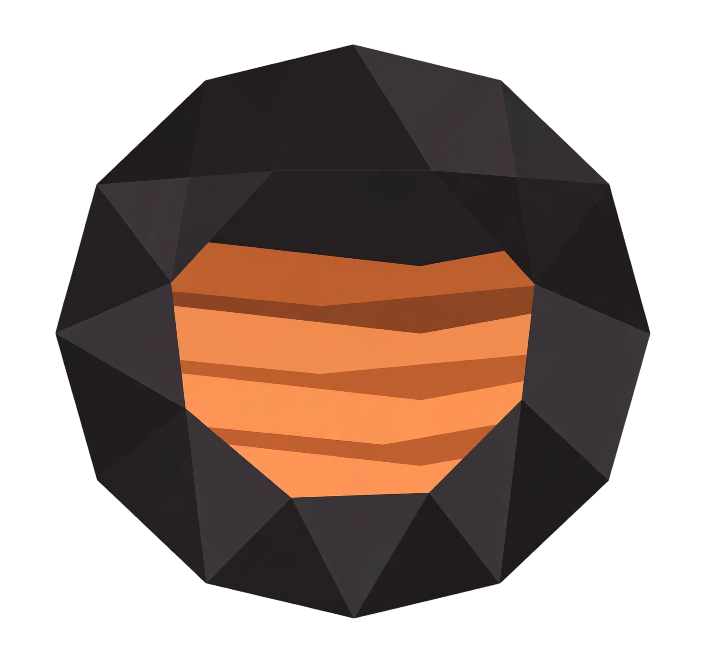

<!DOCTYPE html>
<html lang="id">
<head>
<meta charset="UTF-8">
<meta name="viewport" content="width=device-width, initial-scale=1.0, maximum-scale=1.0, user-scalable=no">
<title>Team Geologist - Lithosite</title>
<!-- BARU (27 Agu): jadi PWA sungguhan -- pakai folder assets/ BERSAMA dgn dashboard
utama (../assets/, tidak menggandakan file ikon), nama app ikut master persis.
Warna/tema TETAP seperti prototype ini semula (#070b1c + biru), tidak diubah. -->
<link rel="icon" type="image/png" sizes="32x32" href="../assets/favicon-32.png">
<link rel="icon" type="image/png" sizes="16x16" href="../assets/favicon-16.png">
<link rel="apple-touch-icon" sizes="180x180" href="../assets/apple-touch-icon.png">
<link rel="manifest" href="manifest.json">
<meta name="theme-color" content="#070b1c">
<script src="https://cdn.tailwindcss.com"></script>
<script src="https://unpkg.com/lucide@latest/dist/umd/lucide.js"></script>
<!-- [PARTISI -- 4 Sep, Tahap 1] Engine geospasial (Inverse UTM/Convergence/Bearing) --
     SATU-SATUNYA salinan, dipakai bersama Master & Member Android. Path relatif ../
     krn file ini ada di member-app/index.html (1 folder di bawah root mine-geologist/). -->
<script src="../shared/geo-engine.js"></script>
<!-- [PARTISI -- 4 Sep, Tahap 2] Konstanta & utilitas generik Member Android. -->
<script src="scripts/config.js"></script>
<!-- [PARTISI -- 4 Sep, Tahap 3] Login, session, logout. -->
<script src="scripts/auth.js"></script>
<!-- [PARTISI -- 4 Sep, Tahap 4] Modal KPI & Absensi + JSA. -->
<script src="scripts/kpi.js"></script>
<!-- [PARTISI -- 4 Sep, Tahap 4] Fetch data utama, Ringkasan, Digging. -->
<script src="scripts/digging.js"></script>
<!-- [PARTISI -- 4 Sep, Tahap 4] Grouping & Tab Validasi. -->
<script src="scripts/validasi.js"></script>
<!-- [PARTISI -- 4 Sep, Tahap 4] Tab Peta + North Arrow + Mode Ukur. -->
<script src="scripts/peta.js"></script>
<!-- [PARTISI -- 4 Sep, Tahap 4] Modal Chat Tim. -->
<script src="scripts/chat.js"></script>
<!-- [PARTISI -- 4 Sep, Tahap 4] Modal Issue & Action. -->
<script src="scripts/issue.js"></script>
<!-- [PARTISI -- 4 Sep, Tahap 4] Report/Settings/Account Menu. -->
<script src="scripts/settings.js"></script>
<style>
  * { -webkit-tap-highlight-color: transparent; }
  /* FIX (4 Sep, revisi ke-2): Fix pertama (overscroll-behavior di html/.app-main) TERNYATA
  BELUM CUKUP -- gestur pull-to-refresh browser masih bisa "menarik" dokumen di level
  html/body itu sendiri (blm dikunci posisinya), DAN .app-shell pakai 100dvh (tinggi yg
  berubah2 ikut address bar browser muncul/hilang saat gestur berlangsung) -- kombinasi
  keduanya bikin nav bar bawah kelihatan "terdorong turun" sesaat. Fix sekarang: html/body
  DIKUNCI TOTAL (position:fixed + inset:0 + overflow:hidden) supaya dokumen level luar
  TIDAK PERNAH bisa digeser/melenting sama sekali oleh gestur apa pun -- satu2nya yg boleh
  scroll cuma .app-main di dalamnya (scroll internal, tidak memengaruhi dokumen luar).
  100dvh diganti 100svh (stable viewport height, TIDAK ikut berubah pas address bar
  muncul/hilang) supaya app-shell tidak "loncat" ukurannya di tengah gestur. */
  html, body {
    position: fixed; inset: 0; width: 100%; height: 100%;
    overflow: hidden; overscroll-behavior: none;
  }
  body { font-family: 'Inter', -apple-system, sans-serif; background:#070b1c; }
  .app-shell { max-width: 480px; margin: 0 auto; height: 100svh; position: relative; background: #070b1c; display: flex; flex-direction: column; overflow: hidden; }
  .app-main { flex: 1; min-height: 0; overflow-y: auto; overflow-x: hidden; background: #070b1c; overscroll-behavior: contain; }
  ::-webkit-scrollbar { width: 0; height: 0; }
  .card { background: rgba(15,23,42,0.55); border: 1px solid rgba(255,255,255,0.06); }
  .glow-gold { box-shadow: 0 0 24px rgba(37,99,235,0.18); }
  .spin { animation: spin 0.8s linear infinite; }
  @keyframes spin { to { transform: rotate(360deg); } }
  .fade-in { animation: fadeIn 0.35s ease both; }
  @keyframes fadeIn { from { opacity:0; transform: translateY(6px); } to { opacity:1; transform:none; } }
  input[type="number"]::-webkit-outer-spin-button, input[type="number"]::-webkit-inner-spin-button { -webkit-appearance:none; margin:0; }
</style>
</head>
<body class="text-white">
<div id="app" class="app-shell"></div>

<script>
/* =========================================================================
 * LITHOSITE -- MEMBER (ANDROID COMPANION APP)
 * Versi ringkas/pelengkap dari dashboard web Mine Geologist, khusus Member.
 * SATU MASTER: backend Apps Script yang SAMA PERSIS dengan dashboard web --
 * endpoint, skema kolom, dan aturan validasi di sini WAJIB selalu mengikuti
 * Code.gs yang sama, tidak pernah punya jalur data sendiri.
 * ========================================================================= */

// ==== KONFIGURASI -- WAJIB SAMA PERSIS DENGAN index.html/member.html web ====
// [PARTISI -- 4 Sep, Tahap 2] GOOGLE_SCRIPT_READ_URL, APP_VERSION, withReadAuthToken,
// fetchWithTimeout, buildAuthenticatedPayload dipindah ke scripts/config.js.

// ==== STATE GLOBAL ====
let currentTab = 'ringkasan';
// [PARTISI -- 4 Sep, Tahap 4] globalCOGConfig/globalDiggingToday/globalValidasiToday/
// globalValidasiFullForMap dipindah ke scripts/digging.js (co-located dgn loadRingkasanData()
// yg mengisinya) -- dibaca dari validasi.js/peta.js via global scope, sama seperti sebelumnya.

// [PARTISI -- 4 Sep, Tahap 4] State Peta (zoom/detail/North Arrow/Mode Ukur) dipindah ke scripts/peta.js.

// [PARTISI -- 4 Sep, Tahap 3] sessionInfo, loginInFlight, saveSession, loadStoredSession,
// clearSession, submitLogin, handleLogout, loginModalOpen, loginStatusMsg/Ok/Busy,
// renderLoginModal, openLoginModal, closeLoginModal -- semua dipindah ke scripts/auth.js.
// [PARTISI -- 4 Sep, susulan] diggingFormState dipindah ke scripts/digging.js.

// ==== ICONS ====


// ==== RENDER: SPLASH ====
function renderSplash() {
  return '' +
  '<div class="min-h-screen flex flex-col items-center justify-center gap-5 fade-in">' +
    '' +
    '<div class="text-center">' +
      '<div class="text-xl font-bold tracking-[0.1em] text-white">MINE GEOLOGIST</div>' +
      '<div class="text-[10px] tracking-[0.3em] text-white/30 mt-1">LITHOSITE</div>' +
    '</div>' +
    '<div class="w-6 h-6 border-2 border-blue-400/30 border-t-blue-400 rounded-full spin mt-4"></div>' +
  '</div>';
}

// [PARTISI -- 4 Sep, Tahap 3] loginModalOpen, loginStatusMsg/Ok/Busy, renderLoginModal,
// openLoginModal, closeLoginModal -- semua dipindah ke scripts/auth.js.

// ==== RENDER: HEADER (dipakai di semua tab) ====
function renderHeader() {
  const hasSession = !!(sessionInfo && sessionInfo.userName);
  const initials = hasSession ? sessionInfo.userName.trim().split(/\s+/).map(w=>w[0]).slice(0,2).join('').toUpperCase() : '';
  const customAvatar = hasSession ? getCustomAvatarDataUrl() : '';
  const todayLabel = new Date().toLocaleDateString('id-ID', { day: 'numeric', month: 'short', year: 'numeric' });
  return '' +
  '<header class="shrink-0 sticky top-0 z-40 px-4 h-[64px] flex items-center justify-between bg-[#070b1c] border-b border-white/[0.08]">' +
    '<div class="flex items-center gap-3">' +
      '' +
      '<div>' +
        '<div class="text-white font-bold tracking-tight text-[15px] leading-none">MINE GEOLOGIST</div>' +
        '<div class="flex items-center gap-1.5 mt-[4px]">' +
          '<span class="w-[7px] h-[7px] rounded-full bg-[#22c55e] animate-pulse inline-block"></span>' +
          '<span class="text-[10px] font-bold tracking-wide text-white/55">Lithosite &bull; ' + todayLabel + '</span>' +
        '</div>' +
      '</div>' +
    '</div>' +
    '<div class="flex items-center gap-2">' +
      // Ikon chat: placeholder visual dulu (belum disambungkan ke Chat Tim beneran) --
      // ditandai jelas, bukan lupa dikerjakan.
      '<button onclick="openChatModal()" class="w-9 h-9 rounded-full bg-[#0b1329] border border-white/[0.08] flex items-center justify-center relative">' +
        icon('message-circle-more','w-[18px] h-[18px] text-white/70') +
      '</button>' +
      // Avatar: tempat Login/Logout beneran (fungsi lama dipertahankan, restyle saja).
      // BARU (27 Agu): kalau Member sudah pasang Foto Profil lokal, tampilkan itu --
      // fallback ke inisial nama seperti sebelumnya kalau belum/sudah dicopot.
      '<button onclick="toggleAccountMenu()" class="w-8 h-8 rounded-full bg-[#0b1329] border border-white/[0.08] overflow-hidden flex items-center justify-center text-[10px] font-bold text-blue-200">' +
        (customAvatar ? '' : (hasSession ? initials : icon('user','w-3.5 h-3.5 text-white/60'))) +
      '</button>' +
    '</div>' +
  '</header>';
}
function renderSectionTitle(title, right) {
  return '<div class="shrink-0 flex items-center justify-between h-[18px] mb-[10px]">' +
    '<h2 class="text-white font-black text-[11px] tracking-[0.12em] leading-none">' + title + '</h2>' +
    (right ? '<span class="text-[10px] text-white/40 font-medium leading-none">' + right + '</span>' : '') +
  '</div>';
}
// [PARTISI -- 4 Sep, Tahap 4] Modal Chat Tim dipindah ke scripts/chat.js.

// ==== RENDER: BOTTOM NAV ====
const TABS = [
  { id:'ringkasan', label:'Ringkasan', icon:'layout-grid' },
  { id:'tabel', label:'Digging', icon:'table-2' },
  { id:'validasi', label:'Validasi', icon:'shield-check' },
  { id:'peta', label:'Peta', icon:'map' }
];
function renderBottomNav() {
  let html = '<nav class="shrink-0 w-full flex items-center justify-around" style="background:#0b1329;border-top:1px solid rgba(255,255,255,0.08);height:72px;padding:8px;">';
  TABS.forEach(t => {
    const active = currentTab === t.id;
    html += '<button onclick="switchTab(\'' + t.id + '\')" class="flex flex-col items-center justify-center gap-[5px] px-3 py-1 rounded-[8px]">' +
      '<div class="w-8 h-8 rounded-full flex items-center justify-center shrink-0 border ' + (active ? 'border-2 border-[#2563eb] bg-[#2563eb]/10' : 'border-transparent') + '">' +
      icon(t.icon, 'w-[18px] h-[18px] ' + (active ? 'text-[#2563eb]' : 'text-white/40')) +
      '</div>' +
      '<span class="text-[10px] font-bold tracking-wide leading-none ' + (active ? 'text-[#2563eb]' : 'text-white/40') + '">' + t.label + '</span>' +
    '</button>';
  });
  html += '</nav>';
  return html;
}

// ==== RENDER: RINGKASAN ====
// ==== HELPER: cari field di objek row tanpa peduli ejaan header persis
// (ID_TP vs "ID TP" vs "Id_Tp", dst) -- header sheet mentah, jangan diasumsikan pasti sama.
// [PARTISI -- 4 Sep, Tahap 2] getField/setField/sumField/avgField dipindah ke scripts/config.js.

function renderErrorBanner() {
  if (!dataLoadErrorMsg) return '';
  return '<div class="rounded-2xl bg-rose-500/10 border border-rose-500/25 px-4 py-3 mb-3 flex items-start gap-2.5">' +
    icon('alert-triangle','w-4 h-4 text-rose-400 shrink-0 mt-0.5') +
    '<div><div class="text-xs font-bold text-rose-300">Gagal memuat data dari server</div>' +
    '<div class="text-[11px] text-rose-300/70 mt-0.5">' + dataLoadErrorMsg + '</div></div>' +
  '</div>';
}

// [PARTISI -- 4 Sep, Tahap 4] Ringkasan & Tabel Digging dipindah ke scripts/digging.js.

// ==== RENDER: VALIDASI ====
// FIX (26 Agu): 1 ID_TP di sheet Validasi punya BANYAK baris (1 baris per kedalaman
// meter yang diukur -- 1m, 2m, 3m dst). Sebelumnya tiap baris ditampilkan sbg entri
// terpisah (salah) -- sekarang dikelompokkan per ID_TP, sama persis pola dashboard
// web: kartu ringkasan pakai RATA-RATA semua kedalaman + Class Grade, detail per
// kedalaman baru dibuka lewat modal.
// [PARTISI -- 4 Sep, Tahap 4] numFieldGet/avgOf/groupValidasiByTp dipindah ke scripts/validasi.js.
// [PARTISI -- 4 Sep, Tahap 4] Fungsi utama Peta dipindah ke scripts/peta.js.

// [PARTISI -- 4 Sep] GRADE_COLOR_PRESETS/DEFAULTS dipindah susulan ke scripts/validasi.js.
// [PARTISI -- 4 Sep, Tahap 4] Tab Validasi (tabel+detail+form) dipindah ke scripts/validasi.js.

// ==== renderPeta() lama (placeholder "Segera Hadir") sudah DIHAPUS v90.2.113 --
// digantikan versi Mine Grid nyata di atas (dekat buildMapData()). ====

// [PARTISI -- 4 Sep, Tahap 4] Report/Settings/Account Menu dipindah ke scripts/settings.js.
// ==== HELPER: modal bottom-sheet generik (dipakai Report/KPI/Settings) ====
function renderSimpleModal(title, subtitle, bodyHtml, closeFn, extraHeaderBtn, justOpened) {
  // justOpened default true (kalau parameter tidak diisi) supaya perilaku lama TIDAK
  // berubah di titik manapun yang lupa di-update -- animasi tetap main spt sebelumnya,
  // aman/fail-safe, cuma kehilangan optimisasi anti-kedip di titik yg terlewat itu saja.
  const animClass = (justOpened === false) ? '' : ' fade-in';
  return '' +
  '<div class="fixed inset-0 bg-black/70 backdrop-blur-sm z-40 flex items-end' + animClass + '" onclick="if(event.target===this)' + closeFn + '">' +
    '<div class="w-full max-w-[480px] mx-auto bg-[#0e1933] rounded-t-[24px] max-h-[85vh] overflow-y-auto border-t border-white/10">' +
      '<div class="sticky top-0 bg-[#0e1933] px-5 pt-5 pb-3 border-b border-white/[0.06] flex items-center justify-between">' +
        '<div><div class="text-sm font-bold text-white">' + title + '</div><div class="text-[10px] text-white/35">' + subtitle + '</div></div>' +
        '<div class="flex items-center gap-2">' +
          (extraHeaderBtn || '') +
          '<button onclick="' + closeFn + '" class="w-8 h-8 rounded-full bg-white/5 flex items-center justify-center">' + icon('x','w-4 h-4 text-white/50') + '</button>' +
        '</div>' +
      '</div>' +
      '<div class="px-5 py-4">' + bodyHtml + '</div>' +
    '</div>' +
  '</div>';
}

// [PARTISI -- 4 Sep, susulan] Form Input Digging utama dipindah ke scripts/digging.js.
function switchTab(id) { currentTab = id; render(); }
// [PARTISI -- 4 Sep, Tahap 3] handleLogout dipindah ke scripts/auth.js.

// ==== MAIN RENDER ====
// [FIX -- 4 Sep] Kedipan popup: app.innerHTML diganti TOTAL tiap render() dipanggil,
// termasuk saat cuma status loading DALAM modal yang berubah (mis. KPI selesai fetch data)
// -- akibatnya elemen modal dianggap browser sbg elemen BARU tiap kali, animasi masuknya
// (class 'fade-in') ikut main ulang dari nol, kelihatan seperti kedip. Fix: lacak modal
// mana yg BENAR2 baru dibuka (beda dari render sebelumnya) vs yg cuma kontennya berubah
// selagi tetap terbuka -- animasi 'fade-in' cuma dipasang utk kasus pertama.
let _prevModalSnapshot = {};
function _computeJustOpenedModals() {
  const snap = {
    updateAssay: !!updateAssayModalOpen,
    login: !!loginModalOpen,
    chat: !!chatModalOpen,
    diggingDetail: !!diggingDetailOpen,
    validasiDetail: !!validasiDetailOpen,
    validasiForm: !!validasiFormOpen,
    report: !!reportModalOpen,
    kpi: !!kpiModalOpen,
    jsa: !!jsaModalOpen,
    settings: !!settingsModalOpen,
    issue: !!issueModalOpen,
    digging: !!diggingModalOpen,
    mapDetail: !!mapDetailIdTp
  };
  const justOpened = {};
  for (const key in snap) justOpened[key] = snap[key] && !_prevModalSnapshot[key];
  _prevModalSnapshot = snap;
  return justOpened;
}

function render() {
  const app = document.getElementById('app');
  const justOpened = _computeJustOpenedModals();
  // Gerbang Login WAJIB tidak dipasang di sini (app tetap langsung buka ke shell utama) --
  // Login sekarang jadi OPSIONAL lewat avatar di header (renderLoginModal), sesuai arahan.
  let html;
  if (currentTab === 'tabel') html = renderTabel();
  else if (currentTab === 'validasi') html = renderValidasi();
  else if (currentTab === 'peta') html = renderPeta(justOpened);
  else html = renderRingkasan();
  html += renderDiggingModal(justOpened.digging);
  html += renderLoginModal(justOpened.login);
  html += renderAccountMenu();
  html += renderKpiModal(justOpened.kpi);
  html += renderJsaModal(justOpened.jsa);
  html += renderIssueModal(justOpened.issue);
  html += renderChatModal(justOpened.chat);
  html += renderValidasiDetailModal(justOpened.validasiDetail);
  html += renderDiggingDetailModal(justOpened.diggingDetail);
  html += renderUpdateAssayModal(justOpened.updateAssay);
  html += renderValidasiFormModal(justOpened.validasiForm);
  html += renderReportModal(justOpened.report);
  html += renderSettingsModal(justOpened.settings);
  app.innerHTML = html;
  if (window.lucide) lucide.createIcons();

  const loginForm = document.getElementById('login-form');
  if (loginForm) {
    loginForm.addEventListener('submit', function(ev) {
      ev.preventDefault();
      const loginId = document.getElementById('login-id-input').value.trim();
      const email = document.getElementById('login-email-input').value.trim();
      const pin = document.getElementById('login-pin-input').value.trim();
      loginBusy = true; render();
      submitLogin(loginId, email, pin, (msg, ok, busy) => {
        loginStatusMsg = msg; loginStatusOk = ok; loginBusy = !!busy;
        if (!busy) render();
      }).finally(() => { loginBusy = false; });
    });
  }
}

// ==== BOOT ====
// BARU (27 Agu): daftarkan Service Worker -- Member App sekarang PWA sungguhan,
// bisa di-install ke homescreen Android, ikon+nama ikut manifest.json (share
// assets/ dgn dashboard utama). Gagal daftar (mis. browser lama) tidak boleh
// menghentikan app -- app tetap jalan normal tanpa PWA kalau SW gagal.
if ('serviceWorker' in navigator) {
  window.addEventListener('load', () => {
    navigator.serviceWorker.register('sw.js').catch((err) => {
      console.warn('Gagal mendaftarkan Service Worker Member App:', err);
    });
  });
}

window.addEventListener('DOMContentLoaded', () => {
  document.getElementById('app').innerHTML = renderSplash();
  if (window.lucide) lucide.createIcons();
  setTimeout(async () => {
    const stored = loadStoredSession();
    if (stored) sessionInfo = stored; // kalau kebetulan ada sesi lama tersimpan, tetap dipakai
    // FIX (27 Agu): splash TIDAK boleh langsung diganti Ringkasan sebelum data beneran
    // siap -- sebelumnya render() dipanggil DULUAN di sini, jadi user sempat lihat
    // Ringkasan kosong (0 Ton dkk) sesaat sebelum data asli masuk, dikira error/rusak.
    // loadRingkasanData() sendiri SUDAH memanggil render() di baris terakhirnya begitu
    // data selesai (sukses ATAU gagal) -- splash otomatis tetap tampil sampai saat itu,
    // tidak perlu render() terpisah di sini lagi.
    await loadRingkasanData();
  }, 900);
});
</script>
</body>
</html>
